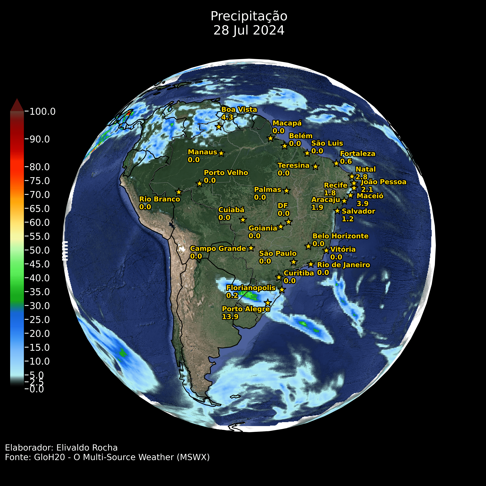
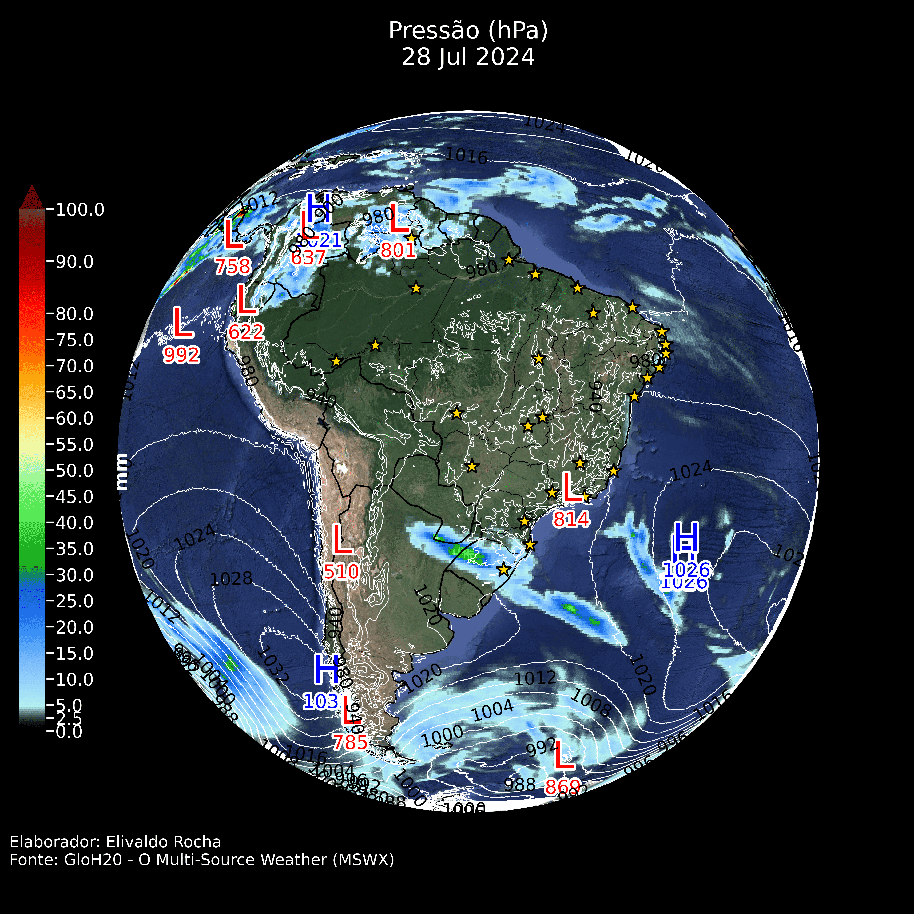
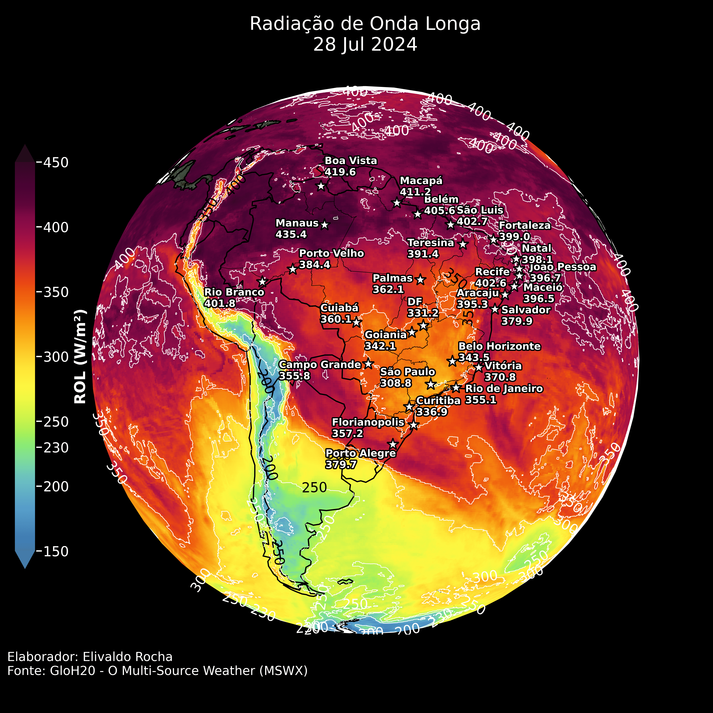
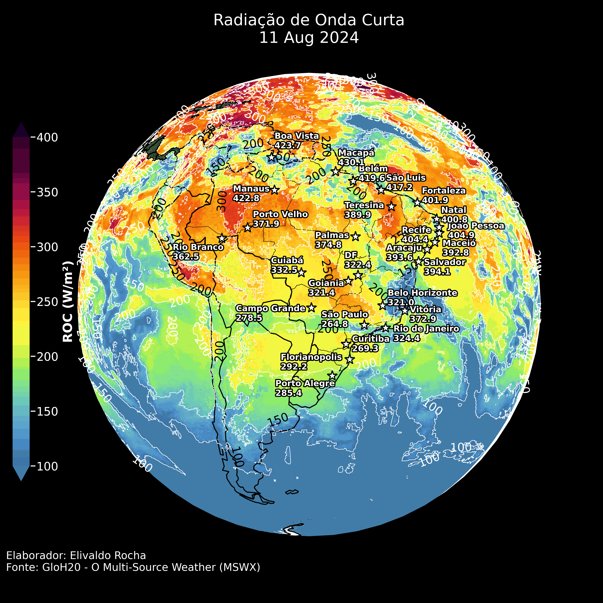
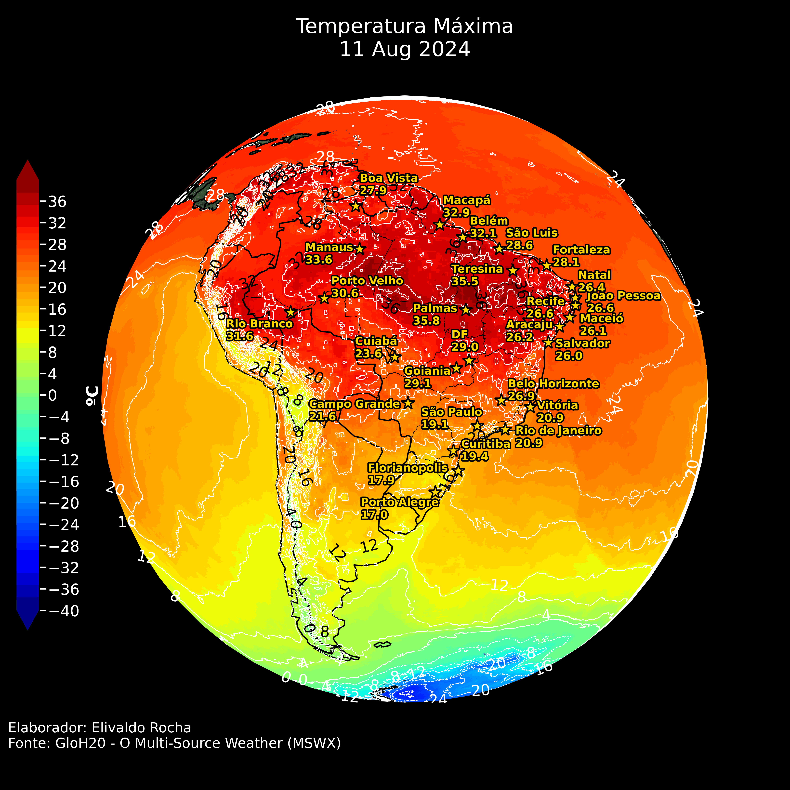
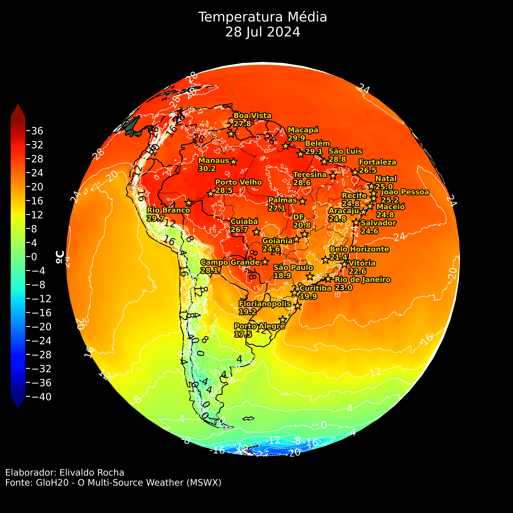
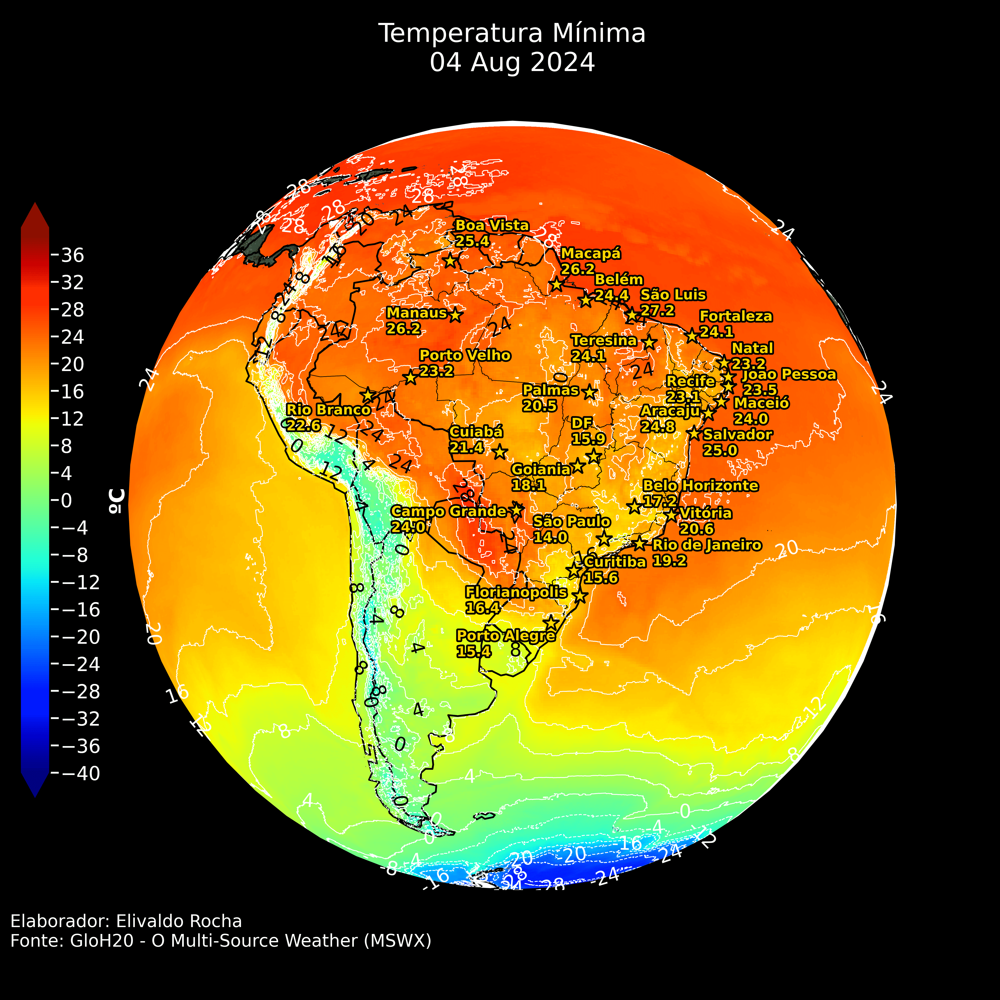
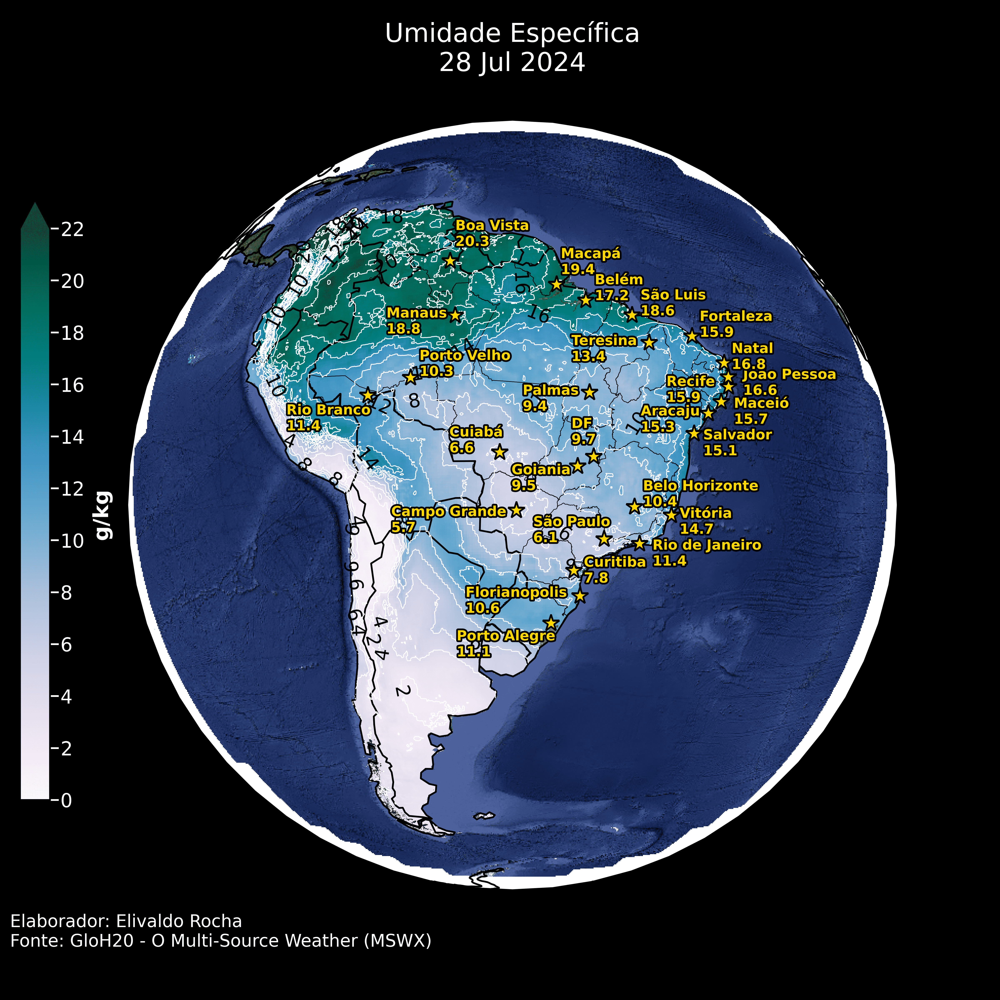
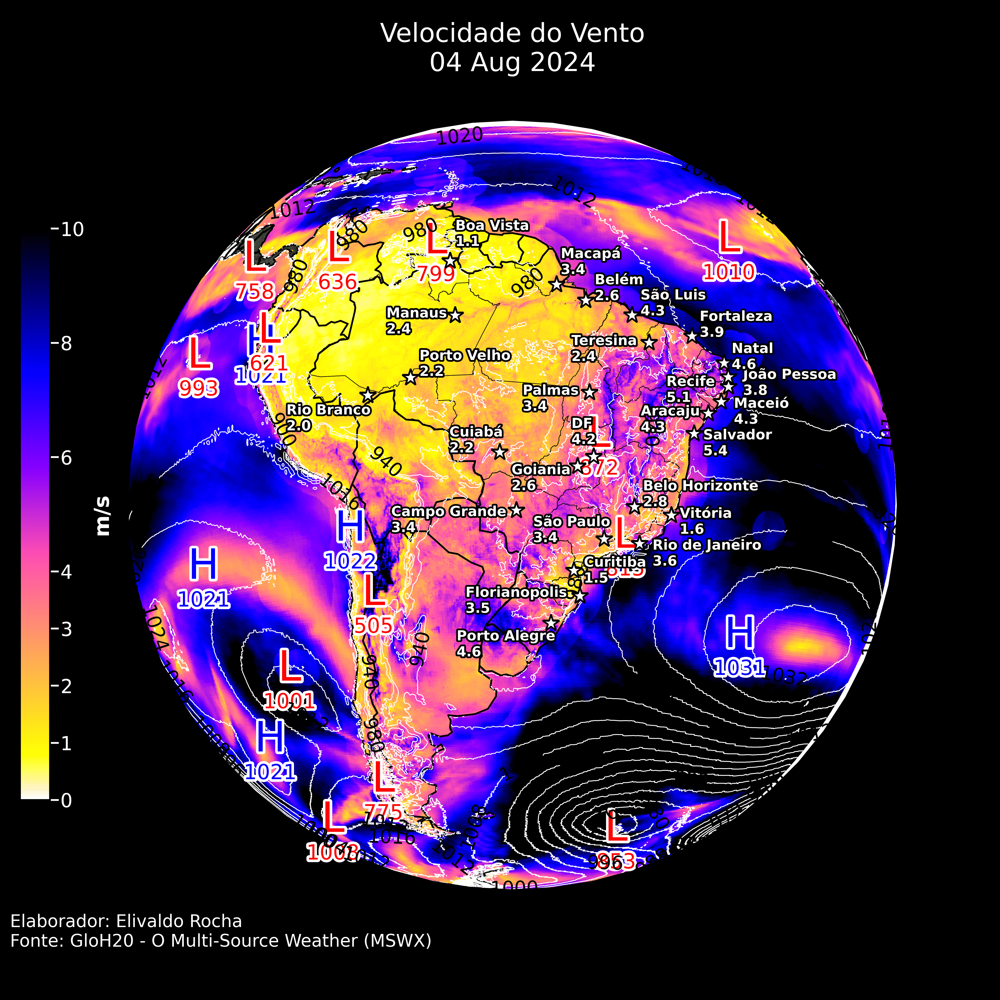

Clique nas setas ou para visualizar as previsões.
Resumo:
O dia 28 de julho de 2024 será marcado por condições meteorológicas extremas em algumas áreas. No Sul do Brasil, a presença de sistemas frontais trará chuvas significativas e possíveis tempestades. As regiões Norte e Nordeste experimentarão altas temperaturas e índices elevados de umidade, favorecendo a sensação de calor e abafamento. O Centro-Oeste e parte do Sudeste continuarão com condições secas, aumentando o risco de queimadas e problemas relacionados à baixa umidade do ar.